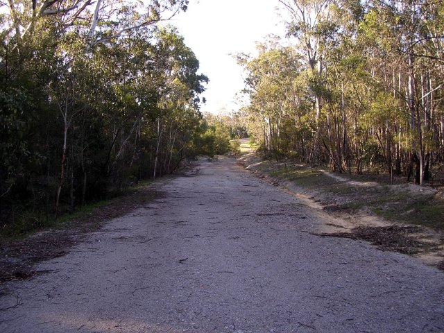
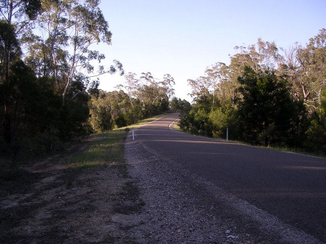
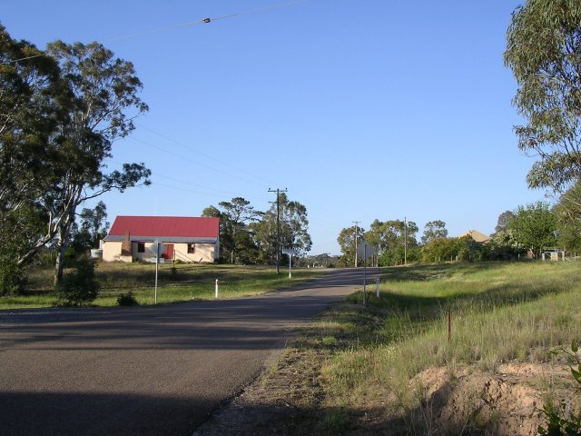
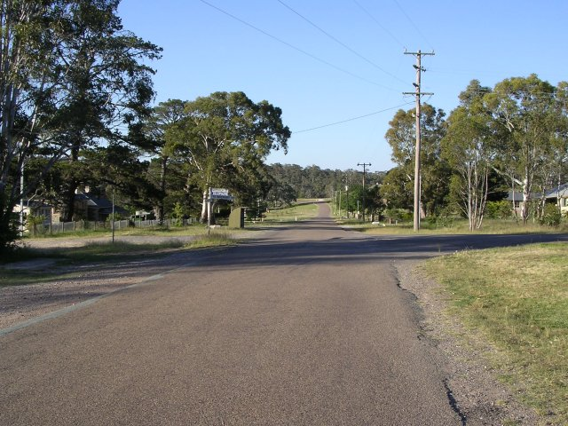
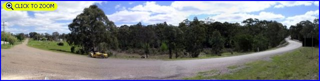
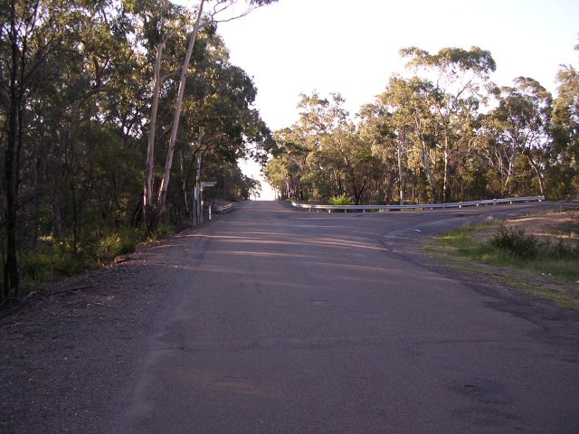
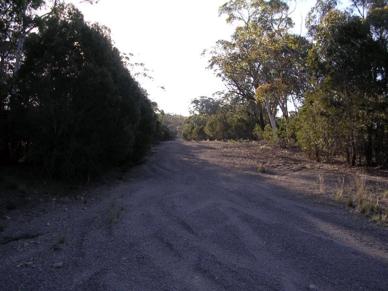

Numbers on the map represent the location where the photographs were taken. Scroll down to view the photographs.
Goulburn-Windellama-Bungonia - Photographs #15 to #20
|| Contents || Photo's 1-7 | Photo's 8-14 | Photo's 15-20 | Photo's 21-25 || Home ||
Numbers on the map represent the location where the photographs were taken. Scroll
down to view the photographs.
Return to racingcircuits.net's Photo Archive Main Index

15 - Further on towards Bungonia.

16 - The present road.

17A - Bungonia. (56.5km)

17B - Bungonia. (56.5km)

18 - Leaving Bungonia. [Click here to zoom in]

19 - Intersection to Marulan. (57.2km)

20 - Old Road. (59.7km)
| << PREVIOUS PAGE |
Photographs and Text ©Neil Fackerell. Reproduced here with kind permission.